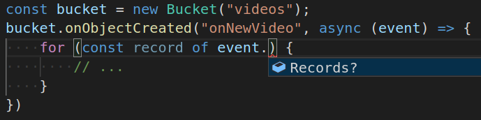

Lambdas as Lambdas: The magic of simple serverless Functions

Pulumi’s approach to infrastructure as code uses real languages instead of YAML or DSLs. One major advantage of this approach is that AWS Lambdas, Azure Functions, Google Cloud Functions, et al. can just be real language lambdas, offering a flexible and simple path to serverless. Such functions behave as normal functions, allowing you to treat serverless code as part of your application instead of separate “infrastructure” that needs to be configured, managed, and versioned manually. In this post, we’ll examine this capability in JavaScript, which is already very function- and callback-oriented, making serverless feel like a natural extension of the language we already know and love.
While Functions as a Service (FaaS) systems have become more popular, getting up and running can still feel overly complex compared to normal application development. FaaS offerings today divide the development experience between “infrastructure” – doing all the work to configure the Lambda runtime itself (i.e. how much memory to use, what environment variables should be present, etc.) – and writing and maintaining the code that will execute in the function itself when triggered. Most developers just want to focus on the latter, write some code, and have it work.
For AWS Lambda, for example, the code itself needs to written and packaged up with all its dependencies into a single zip-file, stored as a blob that is then placed in AWS S3. This blob is then referenced by Lambda so that it can be loaded on-demand when necessary. Updating just a single character of this code, like fixing a bug, then requires fully repackaging and re-uploading everything. Compounding all of that, this code is necessary independent of any other pieces of your application. If the code for the Lambda needs to read or write to an S3 bucket, publish to an AWS SNS topic, etc., it will need to be manually configured to have that bucket’s information passed to it, often using out of band in environment variables. These same issues also apply when creating FunctionApps using Node.js on Azure.
At Pulumi, we thought there could be a better way to do this. Why have to jump out of your application code just to create another bit of configuration (in YAML or JSON) just to run your application? Put simply, we wanted developers to write event-driven code, in their favorite language and in their favorite IDE, and simply hit “deploy” when done.
Magic Functions
From a desire to do better here, the “closure serialized function” was born. However, “closure serialized function” is a geeky mouthful, so I like just calling them “magic functions.” Our team is comprised of cloud, language, and runtime geeks alike, so we figured out a way to hook into the language runtimes to just make lambdas as lambdas work.
Before diving more deeply into how magic functions work, let’s take a look at how they look in action:
// Example simplified to not get too bogged down :)
const sharp = require("sharp");
const videoBucket = new aws.s3.Bucket("videos");
const videoTopic = new cloud.Topic("videoTopic");
videoBucket.onObjectCreated("onNewVideo", async (event) => {
for (const record of event.Records) {
const dimensions = computeDimensions(record.s3.object.key);
videoTopic.publish({ s3ObjectKey: record.s3.object.key, time: record.eventTime });
}
});
function computeDimentions(objectKey: string): { height: number, width: number } {
/* simplified */
const metadata = await sharp(...);
return { height: metadata.height, width: metadata.width };
}
videoTopic.subscribe("compressVideo", async (event) => {
const { s3ObjectKey, time } = event;
// actually compress video.
});
videoTopic.subscribe("createThumbnail", async (event) => {
const { s3ObjectKey, time } = event;
// actually create thumbnail.
});
Let’s still walk through it to see what’s happening. It can be a little subtle because we are mixing deployment-time code – code that declares infrastructure as code resources – and *runtime *code – application code that runs as a function.
First, we’re just defining two simple resources: 1) an s3.Bucket,
where we expect new video files to be uploaded to, and 2) a
cloud.Topic that will inform interested parties when new videos are
uploaded. (The full surface area of AWS is available in the aws package, and
the cloud package offers
multi-cloud abstractions that work at a higher level of abstraction.)
Right after defining the resources, we start creating our first FaaS
resources. videoBucket has an onObjectCreated event subscription
function that will fire when new objects appear, and we invoke it with a
*real* JavaScript (or TypeScript)
arrow-function
defining the code that will execute in an AWS Lambda at runtime.
Not So Fast…
This code is pretty magical in a few ways. To see how it’s magic, let’s
consider a fairly naive way to create a Lambda for
this onObjectCreated event handler function – something we need to
do by hand with FaaS solutions today. Imagine we took the raw source
text of this arrow-function by toStringing it and using that as the
text of the Lambda code:
// index.js
module.exports = async (event) => {
foreach (var record in event.Records) {
const dimensions = computeDimensions(record.s3.object.key);
videoTopic.publish({ s3ObjectKey: record.s3.object.key, time: record.eventTime });
}
};
Now, the above translation could have worked for an extremely basic
function, but totally breaks down here for several reasons. First,
computeDimensions isn’t included, which will make this immediately
fail if ever called. Second, if computeDimensions was included, it
wouldn’t work unless the sharp module was properly imported for it.
Third, even if the module was imported in the code, the actual NPM
package would have to be available along with the code in the cloud.
Fourth, if that module was
properly required,
and the package was properly included, the code is both referencing
videoTopic (a resource defined when the application originally ran),
and it is invoking a helper method on it. Remember, this code is going
to be executing at cloud runtime, not at the time when Pulumi is
actually executing the application on your developer machine, and
actually doing things like running the
const videoTopic = new cloud.Topic("videoTopic") code.
To summarize, we have quickly realized, we can’t just analyze everything locally to figure out what has to be included, instead the entire transitive closure must be considered – a task usually left up to FaaS developers to perform manually! This coupled with the manual configuration using YAML can lead to plenty a headache.
Compilers to the Rescue
Despite all those issues, Pulumi is able to make that original application code work and it is able to magically effectively translate the above into a working Lambda. The real secret sauce here is that, by leveraging real languages, we can stand on the shoulders of all the great compiler work underpinning them.
So let’s dig in – how does this all really work?
(Note that, if you want some of the more nitty gritty details, we have a doc going in depth. For now, we’ll try to stick to providing a high-level overview of what’s going on, so that we can grok the basic approach.)
Pulumi executes your application as a normal Node.js application. As
such, when it hits the const videoBucket = new aws.s3.Bucket("videos")
lines, it actually goes and creates those resources. When it then hits
the videoBucket.onObjectCreated("onNewVideo", async (event) => { line
this executes a normal line of JavaScript. Namely, onObjectCreated is
a normal JavaScript function that will be passed the name parameter as
the first arg, and the JavaScript
function
as the second arg.
onObjectCreated
eventually bottoms out with a call to a call to
pulumi.runtime.serializeFunction.
This function is the root of where our deep analysis of your JavaScript
function analysis and translation will happen.
It’s worth pausing here. We can use all the standard approaches to function composition to build bigger functions out of smaller functions, even before we hit that serialization routine. The closures are built up in the V8 runtime as usual, and are eagerly awaiting the transformation into magic functions as soon as they are needed. Pretty cool!
Once we get to that point, using the awesome analysis APIs provided by
TypeScript, we start
introspecting the function instance, seeing what code it contains, and
what external objects it references. The legal objects that can be
included in the captured function’s environment include (but aren’t
limited) to things like simple JavaScript objects, other functions (like
computeDimensions), modules (like sharp), other Pulumi resources
(like videoTopic), and even complex beasts like
Promises.
Basically, anything that Pulumi knows how to serialize and rehydrate
inside the Lambda.
When Pulumi determines that these objects are referenced, it automatically includes enough information about them into the final translated Lambda code file so that they are available and can be effectively used at runtime. Thanks to JavaScript’s deep, dynamic introspection capabilities, as well as its rich APIs for creating nearly anything at runtime, it’s very possible to effectively hydrate out all the information present when Pulumi runs, and put it into a form that can be cheaply and accurately rehydrated into runtime objects again when the Lambda runs.
This analysis also understands the NPM package structure of an application and its dependencies, ensuring that necessary imported packages are properly included with the final Lambda. This analysis is also very smart about not including things that aren’t necessary at all. For example, it might drop information from the serialized form if it can prove that would never be observable, in addition to relying on built-in runtime functions being there without needing any sort of serialization. There are definite subtleties and interesting cases that can arise here, and for those very curious, reading the documentation linked above may be very enlightening.
Pulumi also understands diffs and dependencies, so updating is a cinch. Any changes to the code in the JavaScript function (including anything it depends on) is properly tracked and understood by Pulumi, allowing an easy development model where FaaS code can be easily modified and republished without jumping through extra hoops.
The Result? Simple serverless Functions
With this approach, serverless programming becomes dramatically simpler, whether it’s an AWS Lambda, Azure Function, or GCP Cloud Function. (Stay tuned, we’re hoping to bring this to Kubernetes FaaS offerings soon.)
In short, you just write event-driven JavaScript code that’s familiar
and easy, you run pulumi up, and everything is taken care of from
there. No YAML configuration files, no point and clicking in a cloud
console UI, no fuss.
On top of all of that, because this is just code itself, and because these are normal APIs, other tooling (like your editor) knows exactly what is going on and can guide you through this. For example:

While there’s a lot of really cool tech going on under the covers here, we really hope that this ends up just feeling super-awesome to use for you. Now that we have this functionality, we wouldn’t want to ever write an AWS Lambda any other way!
Get started building serverless functions on Pulumi today!
Posted on